Delta Function¶
Delta function is defined such that this relation holds:
(1)
No such function exists, but one can find many sequences “converging” to a delta function:
(2)
more precisely:
(3)
one example of such a sequence is:
(4)
It’s clear that (3) holds for any well behaved function 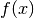. Some mathematicians like to say that it’s incorrect to use such a notation when in fact the integral (1) doesn’t “exist”, but we will not follow their approach, because it is not important if something “exists” or not, but rather if it is clear what we mean by our notation: (1) is a shorthand for (3) and (2) gets a mathematically rigorous meaning when you integrate both sides and use (1) to arrive at (3). Thus one uses the relations (1), (2), (3) to derive all properties of the delta function.
Let’s give an example. Let be the unit vector in 3D and we can label it using spherical coordinates . We can also express it in cartesian coordinates as .
(5)
Expressing as a function of  and
and
 we have
we have
(6)
Expressing (5) in spherical coordinates we get
(7)
and comparing to (6) we finally get
(8)
In exactly the same manner we get
(9)
See also (68) for an example of how to deal with more complex expressions involving the delta function like .
When integrating over finite interval, this formula is very useful:
(10)
in other words, the integral vanishes unless 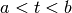. In the limit and we get:
(11)
Distributions¶
Some mathematicians like to use distributions and a mathematical notation for that, which I think is making things less clear, but nevertheless it’s important to understand it too, so the notation is explained in this section, but I discourage to use it – I suggest to only use the physical notation as explained below. The math notation below is put into quotation marks, so that it’s not confused with the physical notation.
The distribution is a functional and each function can be identified with a distribution that it generates using this definition ( is a test function):
(12)
besides that, one can also define distributions that can’t be identified with regular functions, one example is a delta distribution (Dirac delta function):
(13)
The last integral is not used in mathematics, in physics on the other hand, the first expressions () is not used, so always means that you have to integrate it, as explained in the previous section, so it behaves like a regular function (except that such a function doesn’t exist and the precise mathematical meaning is only after you integrate it, or through the identification above with distributions).
One then defines common operations via acting on the generating function, then observes the pattern and defines it for all distributions. For example differentiation:
(14)
so:
(15)
Multiplication:
(16)
so:
(17)
Fourier transform:
(18)
so:
(19)
But as you can see, the notation is just making things more complex, since it’s enough to just work with the integrals and forget about the rest. One can then even omit the integrals, with the understanding that they are implicit.
Some more examples:
(20)
Proof of :
(21)
Proof of :
(22)
Proof of :
(23)
Variations and Functional Derivatives¶
Variations and functional derivatives are generalization of differentials and partial derivatives to functionals. It is important to master this subject just like regular differentials/derivatives in calculus.
Functions of One Variable¶
Let’s first review differentials and derivatives of functions of one variable. We will use an approach that directly generalizes to multivariable functions and functionals. The differential is defined as:
(24)
Last equality follows from the fact, that the limit is a linear function of
 :
:
(25)
Where we used the substitution .
We define the derivative  as:
as:
(26)
To get a formula for , we set 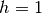 and get:
(27)
Using the formulas above we get an equivalent expression for the differential:
(28)
So we get a general formula (the analogy of which we will use later):
(29)
The variable  can be treated as a function (a very simple one):
can be treated as a function (a very simple one):
(30)
So we define as:
(31)
As such, can have two meanings: either (a finite
change in the variable ) or a differential (if depends on another
variable, thanks to the chain rule everything will work).
With this understanding,
for all calculations, we only need the following two formulas —
the definition of the differential (using a limit):
(32)
and the definition of the derivative (using the differential):
(33)
where is either a differential or a finite change in the variable .
If for example is a function of  then in the above is a
differential and we get:
then in the above is a
differential and we get:
(34)
Thanks to the chain rule, this can also be written as:
(35)
and so the notation is consistent.
Functions of several variables¶
Let’s have . The function 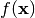 assigns a number to
each . We define a differential of  in the direction of as:
in the direction of as:
(36)
The last equality follows from the fact, that
is a
linear function of . We define the partial derivative  of with respect to
of with respect to  as the
as the  -th component of
the vector :
-th component of
the vector :
(37)
This also gives a formula for computing : we set and
(38)
The usual way to define partial derivatives is to use the last formula as the definition, but here this formula is a consequence of our definition in terms of the components of . Every variable can be treated as a function (very simple one):
(39)
and so we define
(40)
and thus we write 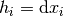 and and
(41)
So  has two meanings — it’s either (a
finite change in the independent variable
has two meanings — it’s either (a
finite change in the independent variable  ) or a differential,
depending on the context. The above is a detailed explanation why things
are defined the way they are and what the exact meaning is. With this
understanding, the only things that are actually needed for any calculations
are the following – the definition of a differential:
) or a differential,
depending on the context. The above is a detailed explanation why things
are defined the way they are and what the exact meaning is. With this
understanding, the only things that are actually needed for any calculations
are the following – the definition of a differential:
(42)
Only a regular derivative (defined in the previous section) is needed for this definition. The definition of a partial derivative (and a gradient):
(43)
And finally the understanding that means
either or a differential depending on the context.
That’s all there is to it.
Functionals¶
Let’s now define functional derivatives and variations. Functional assigns a number to each function . The variation is defined as
(44)
We define as
(45)
This also gives a formula for computing : we set and
(46)
Sometimes the functional derivative is defined using the last formula, here this formula just follows from our definition. Every function can be treated as a functional (although a very simple one):
(47)
and so we define
(48)
thus we write and
(49)
so have two meanings — it’s either
(a finite change in the function ) or a variation
of a functional, depending on the context.
It is completely analogous to . Let’s summarize the only formulas needed
in actual calculations – the definition of a variation (using a regular
derivative):
(50)
the definition of the functional derivative:
(51)![\delta F[f]=\int {\delta F\over\delta f(x)} \delta f(x) \d x](../../_images/math/aca9a01e7da7a50611a335ad9fda59410460a6aa.png)
and the understanding that means either or a variation.
The correspondence between the finite and infinite dimensional case can be summarized as:
(52)![\begin{eqnarray*} f(x_i) \quad&\Longleftrightarrow&\quad F[f] \\ \d f=0 \quad&\Longleftrightarrow&\quad \delta F=0 \\ {\partial f\over\partial x_i}=0 \quad&\Longleftrightarrow&\quad {\delta F\over\delta f(x)}=0 \\ f \quad&\Longleftrightarrow&\quad F \\ x_i \quad&\Longleftrightarrow&\quad f(x) \\ x \quad&\Longleftrightarrow&\quad f \\ i \quad&\Longleftrightarrow&\quad x \\ \end{eqnarray*}](../../_images/math/847f04226ae2cb7a6dd56aee63bc4e3292504c66.png)
More generally,  -variation can by applied to any function
-variation can by applied to any function  which
contains the function being varied, you just need to replace by
and apply to the whole , for example
(here and ):
which
contains the function being varied, you just need to replace by
and apply to the whole , for example
(here and ):
(53)
This notation allows us a very convenient computation, as shown in the
following examples. First, when computing a variation of some integral, we
can interchange and :
(54)
(55)
(56)
In the expression we must understand from the context if
we are treating it as a functional of or  . In our case it’s a
functional of , so we have .
. In our case it’s a
functional of , so we have .
A few more examples (notice that one can do each calculation either in terms of the functional derivative or the variation, and the variation version is usually simpler):
(57)
(58)
(59)
(60)
(61)
(62)
The last equality follows from (any antisymmetrical
part of a would not contribute to the symmetrical integration).
Another example is the derivation of Euler-Lagrange equations for the Lagrangian density :
(63)![0 = \delta I = \delta \int \L \,\d^4x^\mu
= \int \delta \L \,\d^4x^\mu
= \int { \partial \L\over\partial \eta_\rho}\delta\eta_\rho
+
{ \partial \L\over\partial (\partial_\nu \eta_\rho)}
\delta(\partial_\nu\eta_\rho)
\,\d^4x^\mu
=
= \int { \partial \L\over\partial \eta_\rho}\delta\eta_\rho
+
{ \partial \L\over\partial (\partial_\nu \eta_\rho)}
\partial_\nu(\delta\eta_\rho)
\,\d^4x^\mu
=
= \int { \partial \L\over\partial \eta_\rho}\delta\eta_\rho
-
\partial_\nu\left(
{ \partial \L\over\partial (\partial_\nu \eta_\rho)}
\right)
\delta\eta_\rho
\,\d^4x^\mu
+\int \partial_\nu \left(
{ \partial \L\over\partial (\partial_\nu \eta_\rho)}
\delta\eta_\rho
\right)
\,\d^4x^\mu
=
= \int \left[{ \partial \L\over\partial \eta_\rho}
-
\partial_\nu\left(
{ \partial \L\over\partial (\partial_\nu \eta_\rho)}
\right)
\right]
\delta\eta_\rho
\,\d^4x^\mu](../../_images/math/5d0daaac1d2cb9ccf560bfc270acfdd165709b2d.png)
Another example:
(64)
(65)
One might thing that the above calculation is incorrect, because is undefined. In case of such problems the above notation automatically implies working with some sequence (for example 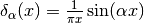) and taking the limit :
(66)
(67)
(68)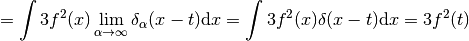
As you can see, we got the same result, with the same rigor, but using an obfuscating notation. That’s why such obvious manipulations with are tacitly implied.
Another example with a metric as a function of coordinates 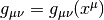:
(69)
And an example of varying with respect to a metric:
(70)
Another example (varying energy functional):
(71)![E[\rho] = 4\pi\int {a \rho(r)\over b + r_s(r)} r^2 \d r
r_s(r) = \left(3\over 4\pi (-\rho)\right)^{1\over 3}
{\d r_s\over\d \rho} =
{1\over 3}\left(3\over 4\pi (-\rho)\right)^{-{2\over 3}}
{3\over 4\pi \rho^2}
=
-{1\over 3\rho}\left(3\over 4\pi (-\rho)\right)^{1\over 3}
=
-{r_s\over 3\rho}
\delta E[\rho] = 4\pi \delta \int {a \rho\over b + r_s} r^2 \d r =
= 4\pi \int\left({a \delta \rho\over b + r_s}
- {a \rho\over (b + r_s)^2 }\delta r_s\right) r^2 \d r =
= 4\pi \int\left({a \delta \rho\over b + r_s}
- {a \rho\over (b + r_s)^2 }\left(-{r_s\over 3\rho}\right)
\delta\rho\right)
r^2 \d r =
= 4\pi \int\left({a \over b + r_s}
+{1\over3} {a r_s\over (b + r_s)^2 }\right) (\delta\rho) r^2 \d r
{\delta E[\rho]\over\delta\rho}
= 4\pi r^2 \left({a \over b + r_s}
+{1\over3} {a r_s\over (b + r_s)^2 }\right)](../../_images/math/26010e32cd7922e1e8f4d5ce2a3b46f0ec95b739.png)
Another example (Hartree energy):
(72)![E[n] = \half \int {n({\bf r}') n({\bf r}'')\over
| {\bf r}' - {\bf r}''| } \d^3 r' \d^3 r''
\delta E[n] = \half \delta \int {n({\bf r}') n({\bf r}'')\over
| {\bf r}' - {\bf r}''| } \d^3 r' \d^3 r'' =
= \half \int { (\delta n({\bf r}')) n({\bf r}'')
+ n({\bf r}') (\delta n({\bf r}''))\over
| {\bf r}' - {\bf r}''| } \d^3 r' \d^3 r'' =
= \int { n({\bf r}') \over | {\bf r}' - {\bf r}''| }
(\delta n({\bf r}'')) \d^3 r' \d^3 r'' =
= \int { n({\bf r}') \over | {\bf r} - {\bf r}'| }
(\delta n({\bf r})) \d^3 r' \d^3 r
{\delta E[n]\over \delta n({\bf r})}
= \int { n({\bf r}') \over | {\bf r} - {\bf r}'| } \d^3 r'](../../_images/math/171de532d2c5b24b9589de2930343b615997fc9b.png)
Dirac Notation¶
The Dirac notation allows a very compact and powerful way of writing equations that describe a function expansion into a basis, both discrete (e.g. a Fourier series expansion) and continuous (e.g. a Fourier transform) and related things. The notation is designed so that it is very easy to remember and it just guides you to write the correct equation.
Let’s have a function . We define
(73)
The following equation
(74)
then becomes
(75)
and thus we can interpret 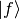 as a vector,  as a basis and as the coefficients in the basis expansion:
as a basis and as the coefficients in the basis expansion:
(76)
That’s all there is to it. Take the above rules as the operational definition
of the Dirac notation. It’s like with the delta function - written alone it
doesn’t have any meaning, but there are clear and non-ambiguous rules to
convert any expression with to an expression which even mathematicians
understand (i.e. integrating, applying test functions and using other relations
to get rid of all symbols in the expression – but the result is
usually much more complicated than the original formula). It’s the same with
the ket : written alone it doesn’t have any meaning, but you can
always use the above rules to get an expression that make sense to everyone
(i.e. attaching any bra to the left and rewriting all brackets
with their equivalent expressions) – but it will be more complex and harder to
remember and – that is important – less general.
Now, let’s look at the spherical harmonics:
(77)
on the unit sphere, we have
(78)
(79)
thus
(80)
and from (?) we get
(81)
now
(82)
from (?) we get
(83)
so we have
(84)
so forms an orthonormal basis. Any function defined on the sphere can be written using this basis:
(85)
where
(86)
If we have a function in 3D, we can write it as a function of  and and expand only with respect to the variable :
and and expand only with respect to the variable :
(87)
In Dirac notation we are doing the following: we decompose the space into the angular and radial part
(88)
and write
(89)
where
(90)
Let’s calculate
(91)
so
(92)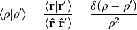
We must stress that only acts in the  space
(not the
space
(not the  space) which means that
space) which means that
(93)
and leaves intact. Similarly,
(94)
is a unity in the  space only (i.e. on the unit sphere).
space only (i.e. on the unit sphere).
Let’s rewrite the equation (?):
(95)
Using the completeness relation (?):
(96)
(97)
we can now derive a very important formula true for every function :
(98)
(99)
where
(100)
or written explicitly
(101)
Homogeneous functions¶
A function of several variables is
homogeneous of degree  if
if
(102)
By differentiating with respect to  :
:
(103)
and setting we get the so called Euler equation:
(104)
in 3D this can also be written as:
(105)
Example 1¶
The function is homogeneous of degree 1, because:
(106)
and the Euler equation is:
(107)
or
(108)
Which is true.
Example 2¶
The function is homogeneous of degree -1, because:
(109)
and the Euler equation is:
(110)
or
(111)
Which is true.
Green Functions¶
Green functions are an excellent tool for working with a solution to any ODE or PDE. In this text we explain how it works and then show how one can calculate them using FEM.
Introduction¶
Let’s put any ODE or PDE in the form:
(112)
Here  is a differential operator and can have any dimension, e.g. 1D
(ODE), 2D, 3D or more (PDE). Then we can express the solution as
is a differential operator and can have any dimension, e.g. 1D
(ODE), 2D, 3D or more (PDE). Then we can express the solution as
(113)
where is a Green function, that needs to satisfy the equation:
(114)
Remember, that acts on only, so we can check, that (113)
indeed solves the PDE (112):
(115)
Boundary Conditions¶
The equation (114) doesn’t determine the Green function uniquely, because one can add to it any solution of the homogeneous equation . We can use this freedom to solve (114) for any boundary condition. So we prescribe a boundary condition and find the Green function (by solving (114)) that satisfies the boundary condition. It can be shown, that determined from (113) then also needs to satisfy the same boundary condition.
Symmetry¶
We write the equation for Green functions at two different points 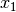
and  :
:
(116)
and multiply the first equation by 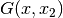, second by :
(117)
substract them and integrate over :
(118)
Assuming that the operator is Hermitean, we get:
(119)
So the Green function is symmetric for Hermitean operators .
Examples¶
Poisson Equation in 1D¶
Poisson equation:
(120)
We calculate the Green function using the Fourier transform:
(121)
Check:
(122)
Then:
(123)
The green function can also be written using 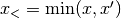 and :
(124)
Radial Poisson Equation¶
Let’s write and using the Heaviside step function:
(125)
and:
(126)
Then we can differentiate:
(127)
Given:
(128)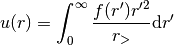
The Green function is
(129)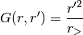
Let’s differentiate:
(130)
and
(131)
So we get:
(132)
So from (128) is a solution to the radial Poisson equation:
(133)
Helmholtz Equation in 1D¶
(134)
with boundary conditions . We use the Fourier transform:
(135)
Check:
(136)
The general solution of the homogeneous equation is:
(137)
so the general Green function is:
(138)
Satisfying the boundary conditions (for all  ):
):
(139)
we get:
(140)
and:
(141)
and
(142)
To show that this really works, let’s take for example . Then
(143)
We can use SymPy to evaluate the integrals:
In [1]: u = -cos(x)*integrate(3*sin(2*y)*sin(y), (y, 0, x)) - \
sin(x)*integrate(3*sin(2*y)*cos(y), (y, x, pi/2))
In [2]: u
Out[2]:
-(cos(x)*sin(2*x) - 2*cos(2*x)*sin(x))*cos(x) - (sin(x)*sin(2*x)
+ 2*cos(x)*cos(2*x))*sin(x)
In [3]: simplify(u)
Out[3]:
2 2
- cos (x)*sin(2*x) - sin (x)*sin(2*x)
In [4]: trigsimp(_)
Out[4]: -sin(2*x)
And we get
(144)
We can easily check, that :
>>> u = -sin(2*x)
>>> u.diff(x, 2) + u
3*sin(2*x)
and since  , we have verified, that is the correct
solution.
, we have verified, that is the correct
solution.

Finite Element Method¶
Let’s show it on the Laplace equation. We want to solve:
(153)
We will treat  as a parameter, so we define :
as a parameter, so we define :
(154)
We set on the boundary and we get:
(155)
So we choose and then solve for using FEM and we get the
Green function for all and one particular . We can then
evaluate the integral (113) numerically – one would have to use FEM
for all that are needed in the integral, so that is not efficient, but it
should work. One will then be able to play with Green functions and be able to
calculate them numerically for any boundary condition (which is not possible
analytically).
Binomial Coefficients¶
For  and integers, the binomial coefficients are defined by:
and integers, the binomial coefficients are defined by:
(156)
For  real, one just uses the second formula as a definition:
real, one just uses the second formula as a definition:
(157)
Example I:
(158)
Example II:
(159)
The binomial formula is for integer:
(160)
and for real and this can be generalized to:
(161)
Example: (for )
(162)
so:
(163)
Another example:
(164)![{1\over\sqrt{1-2xt+t^2}} = \left(1-(2xt-t^2)\right)^{-\half}
= \sum_{n=0}^\infty {1\over 4^n}\binom{2n}{n} (2xt-t^2)^n =
= \sum_{n=0}^\infty {1\over 4^n}\binom{2n}{n} \sum_{k=0}^n
\binom{n}{k} (-t^2)^k (2xt)^{n-k} =
= \sum_{n=0}^\infty {1\over 4^n}\binom{2n}{n} \sum_{k=0}^n
\binom{n}{k} (-1)^k t^{2k} (2x)^{n-k} t^{n-k} =
= \sum_{n=0}^\infty {1\over 4^n}\binom{2n}{n} \sum_{k=0}^n
\binom{n}{k} (-1)^k t^{n+k} (2x)^{n-k} =
= \sum_{n=0}^\infty \sum_{k=0}^{\left\lfloor n\over 2 \right\rfloor}
{1\over 4^{n-k}}\binom{2n-2k}{n-k}
\binom{n-k}{k} (-1)^k t^{n} (2x)^{n-2k} =
= \sum_{n=0}^\infty \left(
{1\over 2^n}
\sum_{k=0}^{\left\lfloor n\over 2 \right\rfloor}
(-1)^k
\binom{n}{k}
\binom{2n-2k}{n}
x^{n-2k} \right) t^{n} =
= \sum_{n=0}^\infty \left(
{1\over 2^n}
\sum_{k=0}^{\left\lfloor n\over 2 \right\rfloor}
(-1)^k
\binom{n}{k}
{1\over n!}{\d^n \over \d x^n} x^{2n-2k}
\right) t^{n} =
= \sum_{n=0}^\infty \left(
{1\over 2^n}
\sum_{k=0}^n
(-1)^k
\binom{n}{k}
{1\over n!}{\d^n \over \d x^n} x^{2n-2k}
\right) t^{n} =
= \sum_{n=0}^\infty \left(
{1\over 2^n n!}
{\d^n \over \d x^n} (x^2 - 1)^n
\right) t^{n} =
= \sum_{n=0}^\infty P_n(x) t^{n}](../../_images/math/cfb5d74dac906768fe35babf335a94370c6c4d31.png)
where we used (167) and
(165)
The  are Legendre Polynomials.
are Legendre Polynomials.
Double Sums¶
When evaluating double sums, one can use triangular summation to reorder them:
(166)
Also it holds
(167)
Triangle Inequality¶
Triangle inequality (condition) means that none of the three
quantities  ,
,  ,
,  is greater than the sum of the other two:
is greater than the sum of the other two:
(168)
This is equivalent to just one equation:
(169)
we can do any permutation of the symbols, i.e. the above equation is equivalent to any of these:
(170)
So instead of stating the three inequalities (168) it is more convenient to just write (169), using any permutation that we like.
To show, that (168) implies (169) we rewrite (168):
(171)
so
(172)
and we get (169). To show, that (169) implies (168) we rewrite (169) for first:
(173)
so:
(174)
rearranging:
(175)
since is positive, if then also and we get
(168). Finally, for :
(176)
so:
(177)
rearranging:
(178)
since is positive, if then also and we get
(168).
Gamma Function¶
The Gamma function is defined by the following properties for :
(179)
(180)
(181)
It can be shown that this determines the function uniquely for (this is called the Bohr-Mollerup theorem) and then it can be extended analytically to the whole complex plane.
The most common formula for that satisfies (179), (180) and (181) is:
(182)
It satisfies (179) because:
(183)
It satisfies (180) by integrating by parts:
(184)
Finally it satisfies (181) by verifying the convex condition directly ( and ):
(185)
And thus (182) uniquely determines the Gamma function. We can use (182) to calculate :
(186)
From this and the definition of the Gamma function we get
for integer :
(187)
and
(188)
Incomplete Gamma Function¶
The upper incomplete gamma function is defined by:
(189)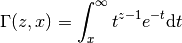
Integrating by parts we get:
(190)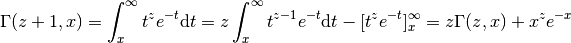
Some special values are:
(191)![\Gamma(z, 0) = \int_0^\infty t^{z-1} e^{-t} \d t = \Gamma(z)
\Gamma(1, x) = \int_x^\infty e^{-t} \d t = -[e^{-t}]_x^\infty = e^{-x}
\Gamma(\half, x)
= \int_x^\infty t^{-\half} e^{-t} \d t
= 2\int_{\sqrt{x}}^\infty e^{-s^2} \d s
= \sqrt{\pi} \mbox{erfc}(\sqrt{x})](../../_images/math/87ae9a06dbdfac59aefc6957503283ff13ab58d0.png)
For integer we get:
(192)
and
(193)![\Gamma(n+\half, x)
= (n-\half)\Gamma(n-\half, x) + x^{n-\half} e^{-x}
= (n-\half)(n-1-\half)\Gamma(n-1-\half, x)
+ ((n-\half) x^{n-1-\half} + x^{n-\half})) e^{-x} =
= (n-\half)(n-1-\half)\cdots\half\Gamma(\half, x)
+ ((n-\half)(n-1-\half)\cdots(1+\half) x^\half + \cdots +
(n-\half) x^{n-1-\half} + x^{n-\half})) e^{-x} =
= {(2n-1)!!\over 2^n}\Gamma(\half, x)
+
{(2n-1)!!\over 2^n} e^{-x}\sum_{\nu=1}^n
{2^\nu x^{\nu-\half}\over(2\nu-1)!!} =
= {(2n-1)!!\over 2^n}\left(\sqrt\pi \mbox{erfc}(\sqrt x)
+
e^{-x}\sum_{\nu=1}^n
{2^\nu x^{\nu-\half}\over(2\nu-1)!!} \right)](../../_images/math/9546a7847c70187d272c3ade1965b4fb816866f7.png)
The lower incomplete gamma function is defined by:
(194)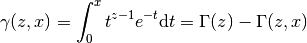
and as such all expressions can be easily derived using the gamma and upper incomplete gamma functions. The recursion relation is then:
(195)
Some special values are:
(196)
By repeated application of the recursion formula we get:
(197)
(198)
where we used:
(199)
which can be proven by the following inequality which uses the fact that the function is an increasing function for , so as long as 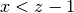 we get:
(200)
Using (198) we can now write  using the Kummer
confluent hypergeometric function 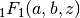 as follows:
using the Kummer
confluent hypergeometric function 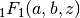 as follows:
(201)
Example¶
Consider the class of integrals:
(202)
We write them using the lower incomplete gamma function as:
(203)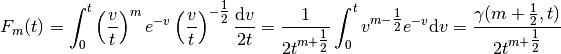
We can also write it using the confluent hypergeometric function as follows:
(204)
For we get:
(205)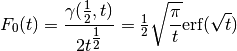
Using the recursion relation we get:
(206)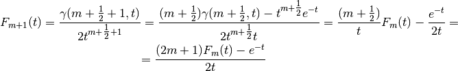
By expressing 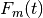 from the equation we obtain the inverse relation:
(207)
From (198) we get:
(208)
 is defined as
is defined as